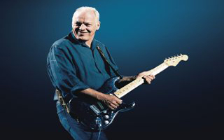
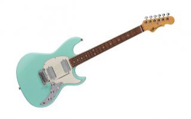

Guitar Tattle

Get a Sneak Peek of David Gilmour's Massive Guitar Auction in New Teaser Video
The massive sale includes the Pink Floyd legend’s iconic black Stratocaster.

Eastman Unveils New Double Top Acoustic Guitars
The guitars in the new series feature soundboards constructed with spruce, plus a 1mm slice of a printed material called Nomex.

G&L Debuts New Deluxe Skyhawk HH Guitar
The Fullerton Deluxe Skyhawk features G&L’s PTB (passive treble and bass) system and a push/pull coil-tap for single coil-like tones.